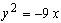
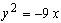
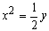

ЗАНЯТИЕ 3.6. КРИВЫЕ ВТОРОГО ПОРЯДКА: ГИПЕРБОЛА, ПАРАБОЛА
Контрольные вопросы
- Дать определения гиперболы, параболы.
- Напишите канонические уравнения гиперболы и параболы, объясните смысл величин, входящих в эти уравнения.
- Напишите уравнения директрис, асимптот гиперболы, покажите на чертеже их расположение относительно гиперболы.
- Чему равен эксцентриситет параболы? Покажите на чертеже расположение директрисы относительно параболы.
Задачи
- Составить уравнение гиперболы, фокусы которой расположены на оси абсцисс,
симметричны относительно начала координат, зная, кроме этого, что:
а) расстояние между фокусами 2 с = 6 и эксцентриситет ;
б) ось 2 а = 16 и эксцентриситет ;
в) уравнение асимптот и расстояние между фокусами 2 с = 20;
г) расстояние между директрисами равно и расстояние между фокусами
2 с = 26.
- Дана точка М1 на гиперболе .
Составить уравнения прямых, на которых лежат
фокальные радиусы точки М1.
- Убедившись, что точка М1 лежит на гиперболе
, определить фокальные радиусы точки М1.
- Эксцентриситет гиперболы
 , центр её лежит в начале координат, один
из фокусов F (12; 0). Вычислить расстояние от точки М1 гиперболы
с абсциссой, равной 13, до директрисы, соответствующей данному фокусу.
, центр её лежит в начале координат, один
из фокусов F (12; 0). Вычислить расстояние от точки М1 гиперболы
с абсциссой, равной 13, до директрисы, соответствующей данному фокусу.
- Определить точки гиперболы , расстояние которых до правого
фокуса равно 4,5.
- Установить, что каждое из следующих уравнений определяет гиперболу,
и найти координаты её центра С, полуоси, эксцентриситет, уравнения асимптот и директрис:
а) ;
б) .
- Составить уравнение параболы, вершина которой находится в начале координат, зная что:
а) парабола расположена в правой полуплоскости симметрично относительно оси Ох, и её параметр
р = 3;
б) парабола расположена в левой полуплоскости симметрично относительно оси Ох, и её параметр р = 0,5;
в) парабола расположена в верхней полуплоскости симметрично относительно оси Оу, и её параметр
р = ;
г) парабола расположена в нижней полуплоскости симметрично относи-тельно оси Оу, и её параметр
р = 3.
- Найти фокус F и уравнение директрисы параболы .
- На параболе найти точки, фокальный радиус которых равен 13.
- Составить уравнение параболы, если даны её фокус F (7; 2) и директриса
.
- Определить точки пересечения прямой
 и параболы
 .
и параболы
 .
- В следующих случаях определить, как расположена данная прямая относительно данной параболы
- пересекается ли, касается или проходит вне её:
а) , ;
б) , ;
в) , .
Ответы
- а) , б) ,
в) , г) ;
- , х - 10 =0;
- ;
- 10;
- и ;
- а) С (2; - 3), а = 3, b = 4, , уравнения
директрис: и ,
уравнения асимптот: , ;
б) С (- 5; 1), а = 8, b = 6, ,
уравнения директрис: и ,
уравнения асимптот: ,
- а) , б) ,
в)  , г) ;
- F (6; 0),
 ;
;
- (9; 12), (9; - 12);
- ;
- (- 4; 6) - прямая касается параболы;
- а) касается параболы, б) пересекает параболу в двух точках, в) проходит вне
параболы.